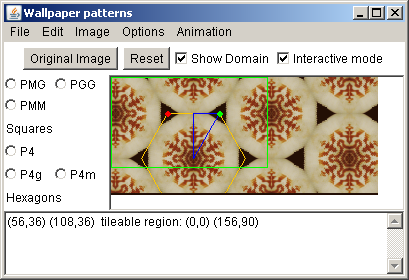

The wallpaper pattern java application/applet creates repeating patterns based on an image and the 17 mathematical plane symmetry groups.
For further assistance you can email me rich@singsurf.org.
The package requires a java runtime to load. The sun java runtime can be downloaded from Sun's download site.
To installation of the package unpack the zip file into a directory. No other action should be needed.
The program can be run in a number of ways:
wallpaper.bat filename.jpg - runs with the
selected filenamewallpaper.bat filename.jpg 800 600 - runs with
the selected filename and specified window sizejava -Xmx512m -jar wallpaper.jar image.jpg 800 600
use this method if more memory need to be allocated.A tessellation can be selected by choosing one of the check-boxes on the left hand side of the screen. These list the 17 wallpaper groups based around lattice structures. Additional tessellations for the 7 Frieze group and cyclic and dihedral groups can be pull down menus below. The basics pull down menu allows the basic transformations to be applied: translations, rotations, reflections, glide-reflections, uniform scaling, and general linear transformations to be applied.
The shape of the domain can be altered by dragging the red, green and blue points. For some groups only the red and green points are visible. It sometimes happens that the some of the points will be lost outside the screen. If that happens the Reset Domain button can be used to load a default set of points which can appear on screen.
Two sets lines are shown. The blue lines are the fundamental domain. The resulting image is constructed by taking the points inside this region and rotating, reflecting and translating them to fill the screen. The yellow lines give the shape of the lattice cells, which are either parallelograms or hexagons. These shapes tessellate the screen and each lattice cell contains exactly the same image as the others.
The image menu allows some image manipulation to be carried out. The image can be zoomed by 1/2 to 1/32, this will preserve the underlying image. The other options will modify the underlying image these allow rotation by 90 degrees, scaling and resizing of the image. Apart from zooming they cannot be undone.
If a very large image is required, say 8000 by 6000, this can cause problems with memory as they can take 50MB memory or more. Some improvement can be made by increasing the size of heap space allocated when the program is used using
java -Xmx512m -jar wallpaper.jar image.jpg 800 600
to allocate 512 megabytes heap space. Swap space on your computer may also be a limiting factor. To allow such large images to be saved the Save expanded menu item on the File menu can be used, this allows the desired output size to be set. This option only supports ppm and bmp format images.
Rectangular tiles which can be used to tile a desktop background can be produced. However, not all patterns have the correct geometry to create such tiles: typically one edges of the domain need to be horizontal or vertical. To assist in creating such tiles select Constrain vertices from the options menu. This will restrict the possible domains only allowing display coordinates of the domain and whether rectangular tiles can be created. A green rectangle is also displayed when rectangular tiles can be created.
If possible the tileable region can be saved using the Save Tile option on the File menu.
Copyright R Morris 2007